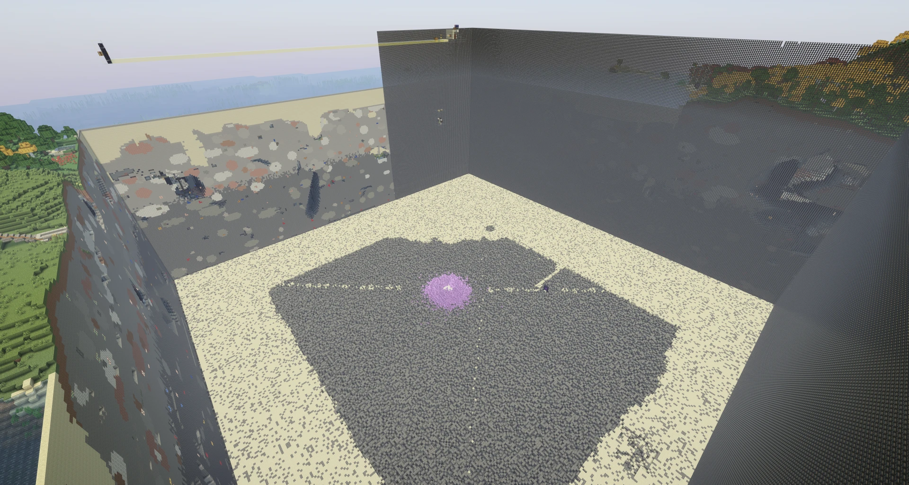
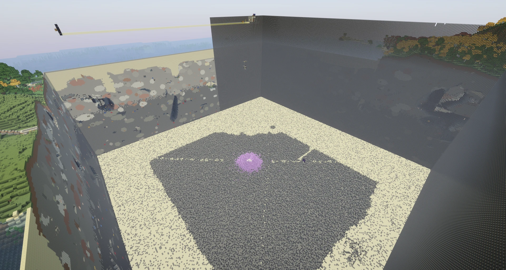
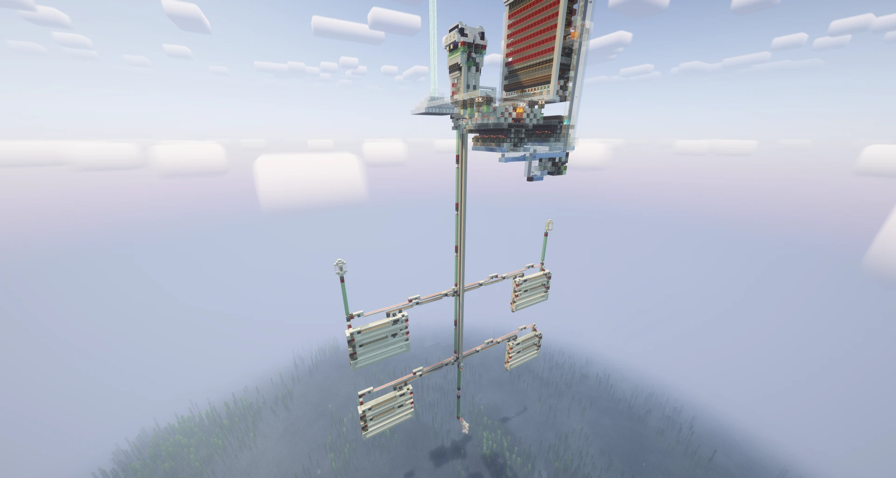
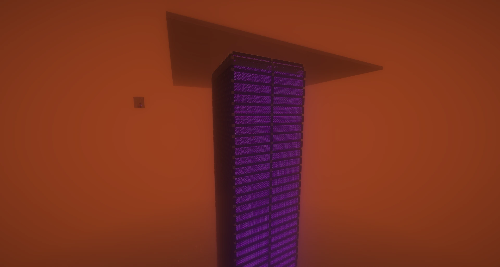
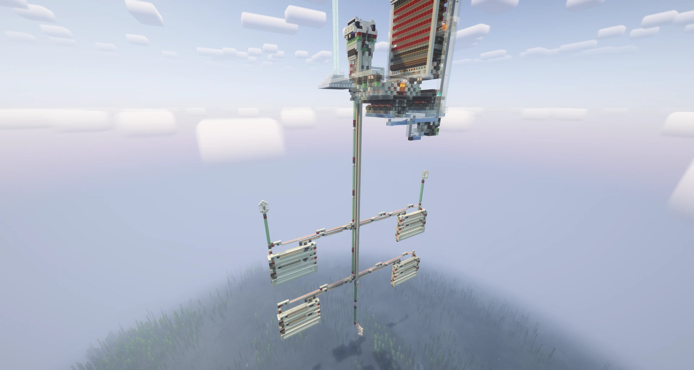
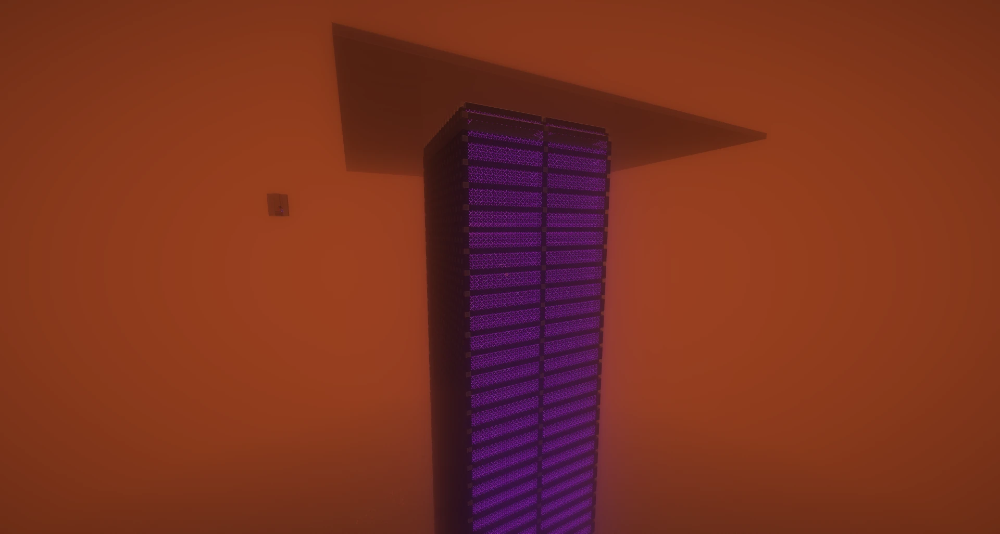

TACS, 中文名为茶水晶服务器, 全称Tea Amethyst Craft Server.
服务器于2023年暑假开服, 当前版本为Fabric 1.21.3, 首任服主为鱼不当(yubudangmc), 第二任服主为红苹果(Redapple_one)
目前服务器运行在物理机上, 由Intel® Core™ i5-13600K强力驱动, 配备了32G 3200Mhz的内存, 使用暴力扇(6000转*2把)散热
自动备份软件(Duplicati)每十二小时自动备份存档到阿里云盘上, 数据有保障
你可以使用正版账号进服
什么, 你没有正版账号? 还可以使用TACS皮肤站账号 进入服务器
进入服务器


 

 


